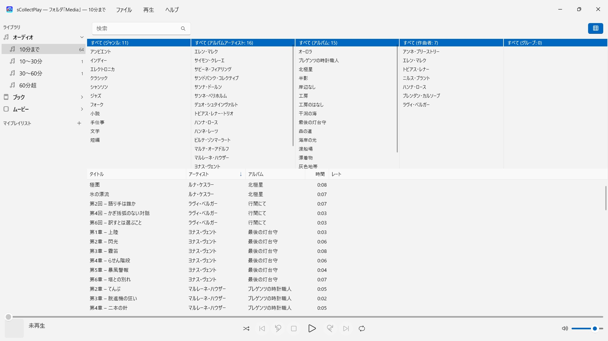
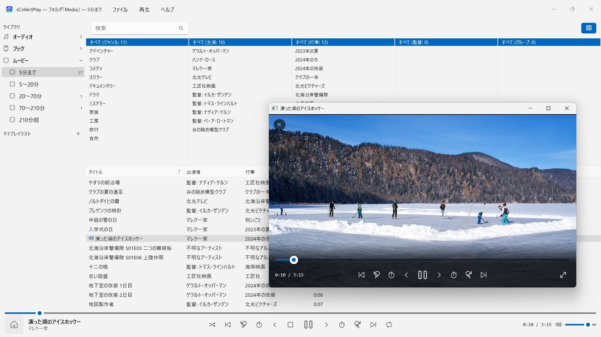

sCollectPlay
フォルダを選んで再生するだけ — インポートもコピーも不要
2026年11月から Microsoft Store で提供フォルダを選んで再生するだけ。音楽、オーディオブック、ポッドキャスト、映画、電子書籍が自動で整理されます。インポートもアカウントもクラウドも不要。iTunesライブラリ（XML）もプレイリストごと読み込めます。


sCollectPlayは、あなたのコレクションを今ある場所のまま再生します。任意のフォルダでも、外付けディスクでも、ネットワークドライブでも。フォルダを選べば、ミュージック、オーディオブック、ポッドキャスト、映画、電子書籍がひとつのリストに整然と並びます。インポートもコピーもなく、あなたのファイルは何ひとつ変わりません。
24言語に対応：英語、ドイツ語、チェコ語、クロアチア語、オランダ語、フィンランド語、フランス語、ハンガリー語、イタリア語、日本語、韓国語、ノルウェー語（ブークモール）、ペルシア語、ポーランド語、ポルトガル語、ルーマニア語、ロシア語、スペイン語、スウェーデン語、タイ語、トルコ語、ウクライナ語、中国語（簡体字・繁体字）。アプリはWindowsの表示言語に従います。
2つのソース
- フォルダ：sCollectPlayはフォルダをサブフォルダごと調べ、タイトル、アーティスト、アルバム、ジャンル、再生時間をファイルそのものから読み取ります。複数のフォルダをひとつのリストにまとめることもできます。次回の起動時には前回読み込んだ状態がすぐに表示され、「スキャンしたフォルダを更新」（Ctrl+R）は新規・変更・削除されたファイルだけを読み込みます。
- iTunes XML：Windows版iTunesのライブラリを、プレイリスト、レート、再生回数ごと。曲がミュージック、オーディオブック、ポッドキャスト、映画、シリーズ、ミュージックビデオのどれなのかは、アプリがXMLから引き継ぎます。
手間いらずの整理
フォルダは、ファイルが曲なのかオーディオブックなのかを教えてくれません。そこでsCollectPlayはスキャンの際に長さで振り分けます。音声は10分まで、10〜30分、30〜60分、60分超、動画は短いクリップから3時間半を超える映画まで。こうして曲、オーディオドラマの各話、オーディオブックが、何も設定しなくても分かれて並びます。電子書籍とPDFは拡張子で見分けます。
ウインドウのタイトルバーには、今何が読み込まれているか — どのフォルダ、どのXMLか — が常に表示されます。
見つける
- タイトル、アーティスト、アルバム、ジャンルなどにまたがる検索 — プレイリストの中でも
- ジャンル、アーティスト、アルバム、作曲者、グループ別のカラムブラウザ、列ごとの複数選択に対応。何千人ものアーティストも延々とスクロールせずに済みます。頭文字でまとめられます
- 列は自由に表示・非表示を切り替えられます。ファイル名、ビットレート、サンプルレート、サイズも。幅と順序はマウスでドラッグして変えられます
- 最近使ったフォルダとXMLファイルは「ファイル」メニューにそろい、次回の起動時には最後のソースがまた開いています
再生
- キュー、シャッフル、リピートを備えた音声再生
- 専用ウインドウでの動画再生。スローモーション、コマ送り、音声トラックと字幕の選択、全画面表示付き
- ほとんどの形式はWindowsが自分で再生します — MP3、AAC、FLAC、OGG、Opus、WMAも、MP4、MKV、AVI、WMV、MPGも。AIFF、DSD、FLVなどWindowsが扱えないものは、Windowsでそのファイルの種類に設定されているアプリに渡します — たとえばVLC
- 自分で作るプレイリストとスマートプレイリスト
- どのプレイリストも、そのファイルごとM3U8リスト付きのフォルダとして書き出せます — SDカード、USBメモリ、または任意のフォルダへ。たとえばAndroidデバイスのVLC用に
あなたのファイルは、そのままに
sCollectPlayはタグを書き込まず、メタデータも変更しません。削除するのは、はっきり指示したときだけです。スキャンしたフォルダやiTunes XMLのメディアファイルはごみ箱に移動します（ネットワークドライブなどごみ箱のないドライブでは、確認のうえ完全に削除されます）。sCollectライブラリのファイルを削除することはありません。
あなたのPCの中だけで
アカウントなし、クラウドなし、解析なし、広告なし。アプリは、あなたが渡したフォルダだけを相手にします。どの言語にも完全なヘルプが付いています。
sCollectPlay Lite · 無料 — sCollectPlayの軽量版。フォルダ、iTunes XML、またはsCollectライブラリを開くだけで、音楽、映画、オーディオブック、ポッドキャストを再生 — プレイリスト、音声トラック、字幕トラック、スローモーション、コマ送りに対応。一度に開けるソースは1つだけです。カラムブラウザ、自分で作成するプレイリスト、最近使ったソースのリストはフル版でのみ利用できます。
- Windows 11 以降が必要
- 24 言語に対応
- サポート： SwiftAppsBavaria@gmx.net
- sCollectPlayとsCollectPlay Liteのプライバシーポリシー